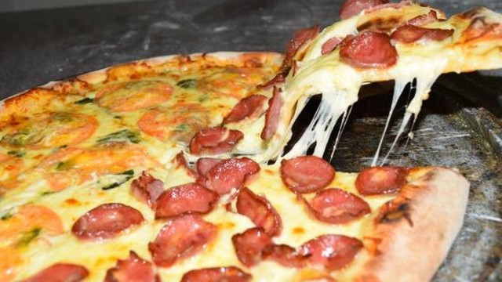

Lasanha
A palavra lasanha provém da grega "lasanon" que significa pote de quatro. O termo foi depois emprestado pelos romanos como "lasanum" para significar pote de cozinhar. Os italianos usaram a palavra para definir o prato onde, hoje se sabe, era feita a Lasanha.

Coxinha
Coxinha é um termo pejorativo usado na gíria e que serve para descrever uma pessoa "certinha", "arrumadinha". ... Além disso, outra explicação é que os policiais tinham baixo poder aquisitivo e recebiam vales de refeição que muitas vezes só permitiam comprar "coxinhas", o famoso salgadinho.
Pizza
Pizza (também grafada piza em Portugal) é uma preparação culinária que consiste em um disco de massa fermentada de farinha de trigo, coberto com molho de tomate e os ingredientes variados que normalmente incluem algum tipo de queijo, carnes preparadas ou defumadas e ervas, normalmente orégano ou manjericão, tudo assado em forno.>